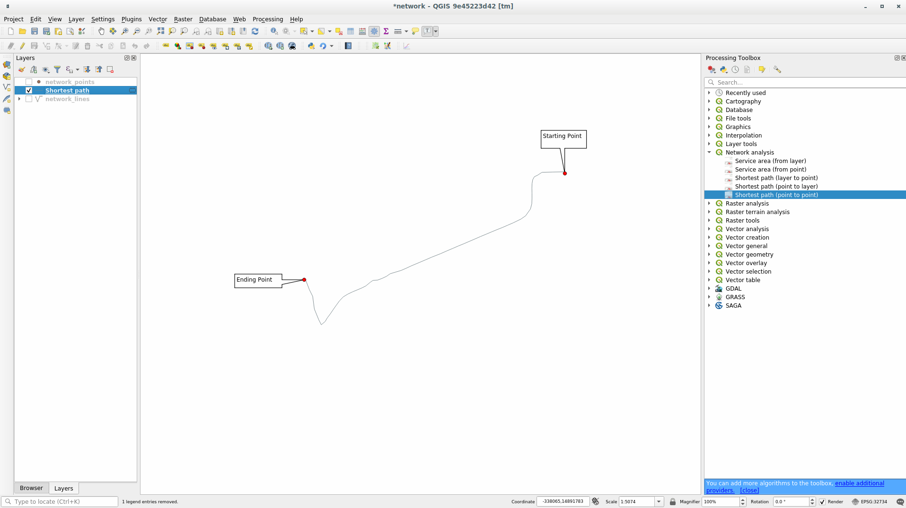

重要
翻訳は あなたが参加できる コミュニティの取り組みです。このページは現在 100.00% 翻訳されています。
6.3. レッスン: ネットワーク分析
2点間の最短距離を計算することは、一般的なGISタスクです。このためのツールは プロセシングツールボックス で見つけることができます。
このレッスンの目的 ネットワーク分析 アルゴリズムを使うことを学びます。
6.3.1. ★☆☆ （初級レベル） 理解しよう: ツールとデータ
すべてのネットワーク解析アルゴリズムは メニューにあります。利用可能なツールがたくさんあることがわかります：

プロジェクト exercise_data/network_analysis/network.qgz を開いてください。2つのレイヤーが含まれています:
network_pointsnetwork_lines
network_lines レイヤには、道路網を理解するのに役立つスタイルがすでにあります。
{kind=link}
最短経路ツールは、ネットワークの2点間の最短経路または最短経路を計算する方法を提供します:
地図上で選択された始点と終点
地図上で選択された始点と、ポイントレイヤから取得された終点
ポイントレイヤから取得された始点と地図上で選択された終点
では始めましょう。
6.3.2. ★☆☆ （初級レベル） 最短経路を計算する（2地点間）
を使うと、地図上の二つの手動で選択した地点間の最短距離を計算できます。
この例では、2地点間の 最短 （最速ではない）経路を計算します。
最短経路（指定始点から指定終点） アルゴリズムを開きます
Network_lines を ネットワークを表すベクタレイヤ に選択します
計算するパスの種類 に
最短を使用しますこの2点を解析の起点と終点とします:
始点(x, y)`の隣にある :guilabel:...` ボタンをクリックし、絵の中の Starting Point` とタグ付けされている場所を選択します。正確に選択するために、スナップオプションを有効にしてください。クリックした地点の座標が追加されます。
同じことをしますが、 終点 に
Ending pointというタグが付けられた場所を選びます。実行 ボタンをクリックします：

選択したポイント間の最短パスを表す新しいラインレイヤが作成されます。
network_linesレイヤのチェックを外して、結果をよりよく確認します。 出力レイヤの属性テーブルを開きます。始点と終点の座標と コスト を表す3つのフィールドが含まれています。
最短を 計算するパスの種類 として選択したので、 コスト は2つの位置間の 距離 をレイヤ単位で表します。この場合、選択された点の間の 最短 の距離は約1000メートルです。

{kind=link}
{kind=link}
ツールの使い方がわかったので、他の場所も自由に試してください。
6.3.3. ★★☆ （中級レベル） 自分でやってみよう: 最速経路
前の演習と同じデータを使用して、2点間の最速経路を計算してみます。
始点から終点までどのくらいの時間が必要ですか？
Answer
を開き、ダイアログを以下のように埋めます:

計算するパスの種類 が
最速であることを確認します。実行 をクリックしてダイアログを閉じます。
出力レイヤの属性テーブルを開きましょう。 cost フィールドには、2点間の移動時間が（時間単位で）表示されます。

6.3.4. ★★☆ （中級レベル） 理解しよう: 高度なオプション
ネットワーク解析ツールのいくつかのオプションを調べてみましょう。 前の演習 では、2点間の 最速 のルートを計算しました。ご想像のとおり、時間は移動 速度 によって異なります。
これまでの演習と同じレイヤと開始点、終了点を使用します。
最短経路（指定始点から指定終点） アルゴリズムを開きます
入力レイヤ、 開始点 (x, y) 、 終了点 (x, y) を先程と同じように埋めます
計算するパスの種類`として ``最速` を選択します
詳細パラメータ メニューを開きます
デフォルトの速度 (km/h) をデフォルトの
50から4に変更します実行 をクリックします
アルゴリズムが終了したら、ダイアログを閉じて、出力レイヤの属性テーブルを開きます。
cost フィールドには、選択した速度パラメータに応じた値が含まれます。 cost フィールドを、端数のある時間から、より読みやすい 分 の値に変換できます。
 アイコンをクリックしてフィールド計算機を開きます
アイコンをクリックしてフィールド計算機を開きます経路のコストを格納するために新しいフィールド minutes を追加します。

{kind=link}
これだけです！これで、ネットワーク全体の速度が時速4キロの場合に、ある地点から別の地点まで何分かかるかがわかります。
6.3.5. ★★★ （上級レベル） 速度制限のある最短パス
ネットワーク解析ツールボックスには他にも興味深いオプションがあります。次の地図を見てください：

各道路の制限速度を考慮した 最速 ルートを知りたい（ラベルは 制限速度 をkm / hで表しています）。制限速度を考慮しない最短経路はもちろん紫色の経路になります。しかし、その道路では制限速度20 km / hですが、緑色の道路では100 km / h出せます！
最初の練習でやったように、 を使用して、手動で始点と終点を選びます。
アルゴリズムを開く
ネットワークを表すベクタレイヤ パラメータに network_lines を指定します
計算するパスの種類`として ``最速` を選択します
先ほどと同じように、開始点 (x, y) と 終了点 (x, y) を選択します
詳細パラメータ メニューを開きます
速度を示す属性（フィールド） パラメータとして speed フィールドを選択します。このオプションを使用すると、アルゴリズムは各道路の制限速度を考慮に入れます。

実行 ボタンをクリックします
結果を見やすくするために、
network_linesレイヤを非表示にします
ご覧のとおり、最速ルートは最短ルートに対応していません。
6.3.6. ★★☆ （中級レベル） サービスエリア（レイヤから）
アルゴリズムは次の質問に答えることができます：ポイントレイヤがあるとき、距離または時間の値が与えられると到達可能なすべてのエリアはどうなりますか？
注釈
は同じアルゴリズムですが、地図上のポイントを手動で選択できます。
250 メートルの距離が与えられたとき、 network_points レイヤの各ポイントからどれだけそのネットワーク上を移動できるか知りたいとします。
network_points以外のレイヤのチェックを外しますアルゴリズムを開きます
ネットワークを表すベクタレイヤ に
network_linesを選択します始点のあるベクタレイヤ に
network_pointsを選択します計算するパスの種類 に
最短を選択します求めたい旅行コスト パラメータに
250を入力します実行 をクリックしてダイアログを閉じます

出力レイヤは、250メートルの距離を与えられてポイント地物から到達できる最大径路を表します。

すごいですよね？
6.3.7. 結論
これで、ネットワーク解析 アルゴリズムを使用して、最短と最速経路の問題を解決する方法がわかりました。
これで、ベクタレイヤデータに対して空間統計を実行する準備が整いました。さあ行きましょう！
6.3.8. 次は?
次は、ベクタデータセットに空間統計アルゴリズムを実行する方法について説明します。